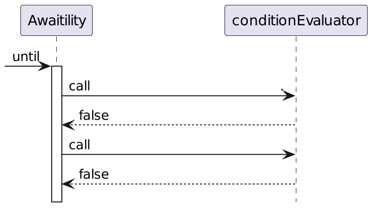

GenericContainer redis = new GenericContainer(
DockerImageName.parse("redis:5.0.3-alpine"))
.withExposedPorts(6379);
String address = redis.getHost();
Integer port = redis.getFirstMappedPort();
underTest = new RedisBackedCache(address, port);Mocks vs TestContainers
 | Ivan Ponomarev
|
Why I Decided to Make This Presentation?
Modern integration test
Modern integration test

Modern integration test
Modern integration test
Modern integration test
Modern integration test
What do we have?
Mocks |  | Real Systems |
Using mocks is like learning chemistry from cartoons…
Nothing beats a real experiment, though…
What do we have for Real Experiments?
What do we have for Real Experiments?
TestContainers in action
Set of stereotypes
Mocks of external services
Mocks of external services
Mocks | | Real Systems |
|
| |
|

The importance of proper testing of corner cases
WireMock features
WireMock features
WireMock features
"Spy" by intercepting calls to the real service

What about RDBMS/NoSQL/message brokers etc?
What about RDBMS/NoSQL/message brokers etc?
Mocks vs TestContainers: compatibility
Mocks | | Testcontainers |
|
Mocks vs TestContainers: compatibility
Mocks | | Testcontainers |
|
|
Mocks vs TestContainers: Ease of use and start-up speed
Mocks | | Testcontainers |
|
Mocks vs TestContainers: Ease of use and start-up speed
Mocks vs TestContainers: Ease of use and start-up speed
Mocks | | Testcontainers |
|
|
TC Startup time

Worst situation
 "I have a laptop with an ARM-based CPU and the Docker image is not compatible!"
"I have a laptop with an ARM-based CPU and the Docker image is not compatible!"
Testcontainers Cloud
 Paid service
Paid service- Requires good Internet connection (won’t work on a train)
Convenience
Mocks | | Testcontainers |
|
|
Integration Mocks vs TestContainers
Mocks | | Testcontainers |
|
Integration Mocks vs TestContainers
Mocks | | Testcontainers |
|
|
Availability
Mocks | | Testcontainers |
|
|
Story № 1. JedisMock and Call Verification

Mocks of Redis in various programming languages
JedisMock
JedisMock
Tested with Comparison tests (running identical scenarios on Jedis-Mock and on containerized Redis)

JedisMock
JedisMock
Still behavior which is different from the real Redis is being constantly reported by users (and quickly fixed)

Why mock if we have TestContainers?
JedisMock is a regular Maven dependency
RedisCommandInterceptor: explicitly specified response
RedisCommandInterceptor: verification
RedisCommandInterceptor: failure simulation
Working as a Test Proxy
Conclusions on Jedis-Mock
 For most Redis testing tasks, TestContainers works.
For most Redis testing tasks, TestContainers works.- But if you want to verify the behavior of your own system or study it in situations when Redis itself fails — JedisMock is helpful.
Story №2. Kafka Streams TopologyTestDriver
and the Hell of Asynchronous Testing
Kafka Streams testing: possible options
 | |
TopologyTestDriver
 Simple (just a regular Maven dependency)
Simple (just a regular Maven dependency)- Fast
- Convenient (good API for Arrange and Assert)
The Main Difference:
TopologyTestDriver | | Real Kafka |
Works synchronously (single thread and event loop) | Works asynchronously in multiple threads on multiple containers |
Thought Experiment: Limitations of Asynchronous Tests
We send "ping" and expect the system to return a single response "pong".
 2 seconds. No response.
2 seconds. No response.- 3 seconds. No response.
4 seconds. "pong". Are we done?
5 seconds. Silence.
6 seconds. Silence.
7 seconds. "boom!"
The Problem with Polling
Awaitility: A partial solution to the problem with asynchronous testing
Awaitility.await().atMost(10, SECONDS).until(() ->
{ // returns true
});

Awaitility: A partial solution to the problem with asynchronous testing
Awaitility.await().atMost(10, SECONDS).until(() ->
{ // returns true
});

Awaitility: A partial solution to the problem with asynchronous testing
Awaitility.await().atMost(10, SECONDS).until(() ->
{ // returns true
});
Awaitility: Test failure
Awaitility.await().atMost(10, SECONDS).until(()->
{ // returns false for more than 10 seconds
});
Awaitility DSL Capabilities
Meanwhile, in browser automation…
Problems with Awaitility
Real Test with Awaitility: Part 1
Real Test with Awaitility: Part 2
Test with TopologyTestDriver
What’s the pitfall??
- synchronous nature and lack of caching lead to differences in behavior
- it’s possible to construct simple code examples that pass the "green" test on TTD, but operate completely incorrectly on a real cluster (refer to https://www.confluent.io/blog/testing-kafka-streams/)
Conclusions on KafkaStreams:
- TopologyTestDriver (TTD) remains essential, despite its limitations.
- Understand that TTD may not fully mimic the behavior of a real Kafka cluster.
- A failure in TTD indicates problems in the code; however, passing tests in TTD do not guarantee code reliability.
- Conduct a limited number of tests on a containerized Kafka cluster when necessary.
Story №3. Mock as One of the Supported Backends
Apache Beam
Apache Beam is a unified programming model to define and execute data processing pipelines, including ETL, batch and stream (continuous) processing.
SDKs: Java, Python, Go
Apache Beam Runners
Sets of Functional Capabilities
 |
Matrix of Supported Features (Fragment)
|
Direct Runner
Apache Beam’s Direct Runner
- Failure on Direct Runner means the code is bad.
- Successful execution on Direct Runner doesn’t mean the code is good.
- How to test Google Cloud Dataflow without Google Cloud is beyond me.
Celesta
 |
|
Celesta
|
|
Celesta
Celesta
 |
|
Celesta
Celesta Comparison Tests

Celesta
Celesta
In-Memory H2 Capabilities
- Starts with an empty database instantly
- Migrates instantly
- Queries are easily traced
(SET TRACE_LEVEL_SYSTEM_OUT 2) - After the test, the state is "forgotten"
Using the spy JDBC Driver to trace SQL queries
CelestaTest: Arrange
CelestaTest: Arrange
CelestaTest: Local arrange
CelestaTest: Act & Assert
CelestaTest
- Works instantly
- Creates an empty database with the required structure for each test
- Encourages writing a large number of tests for all database-related logic
- The price we pay is the limitation of functionality within what Celesta supports.
Conclusions on TestContainers
- Can pose problems with startup speed and developer machine configuration.
- Real services are "black boxes," and it’s difficult to force them into the desired state.
- Integration tests with "real" services are asynchronous, with insurmountable difficulties. These difficulties need to be understood.
Conclusions on Mocks
- Specialized mocks are easier to connect, start, and execute faster.
- Mocks have special functionality that facilitates testing.
- Mocks do not behave the same way as the real system. This fact needs to be understood and accepted.
- For your system, mocks may simply not exist.
General Conclusions
- When forming a testing strategy, one should rely not on stereotypes but on a deep understanding of the system’s characteristics and available tools. The strategy will be different every time!
- The testability of the system as a whole should be one of the criteria when choosing technologies.
The Most Important Conclusion
You should use both mocks and containers,
but above all, use your own head.
@inponomarev